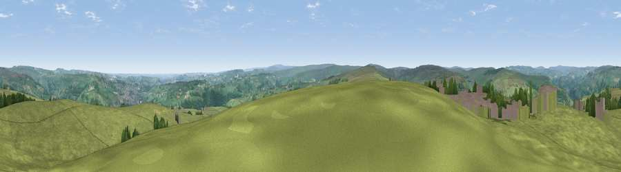

Viewpoint near Cragg Vale
#10593 in England · top 12% of its area beats it · near Cragg ValeWhere it is
The exact computed spot (SE 01925 22925). Click the marker for map links.
The view, rendered

A 360° render of this exact spot computed from the terrain model, tree cover and land cover — summer colours, afternoon light, calibrated against photographs of famous viewpoints. Real trees, hedges and buildings will differ in detail.
The panorama
Grey silhouette: terrain skyline in each direction (720 bearings, Earth curvature and refraction included). Dashed green: skyline with trees (+15 m) and buildings (+8 m) as obstacles. Blue strip: how far the ground is visible on each bearing.
Where the view opens
Wedge length = distance to the farthest visible ground on that bearing (vegetation-aware). Rings at 10, 25 and 50 km.
What fills the view
85% grassland · 12% woodland · 3% built-up
Angular shares of the visible panorama (visual magnitude), not map area. Landscape diversity 0.23 (0–1 Shannon).
Key numbers
More beautiful places nearby
The staircase of upgrades: each row has a higher view potential than everything closer. Driving times are estimates from straight-line distance, calibrated against real road routing — check an actual route before setting out.
| Place | Direction | Drive | Score |
|---|---|---|---|
| Viewpoint near Chiserley | N · 5 km | ~11 min | 63.9 |
| Viewpoint near Timbercliffe | SW · 8 km | ~16 min | 68.7 |
| Viewpoint near Stump Cross | NE · 8 km | ~17 min | 71.5 |
| Viewpoint near Shaw | SSW · 16 km | ~28 min | 72.9 |
| Viewpoint near Edenfield | WSW · 20 km | ~34 min | 77.5 |
| Darwen Hill | W · 34 km | ~52 min | 80.7 |
| White Brow | WSW · 37 km | ~56 min | 82.9 |
| Warton Crag | NW · 72 km | ~96 min | 83.2 |
53.70275, -1.97232 · source: screening · position refined by local search. Computed location — check access rights before visiting.